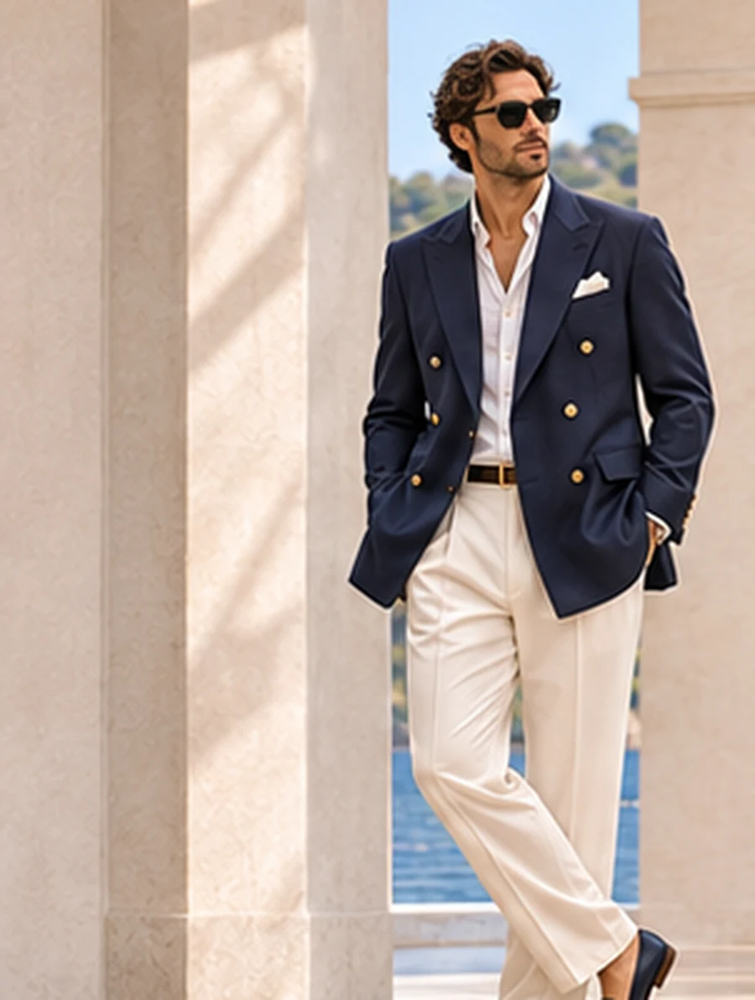
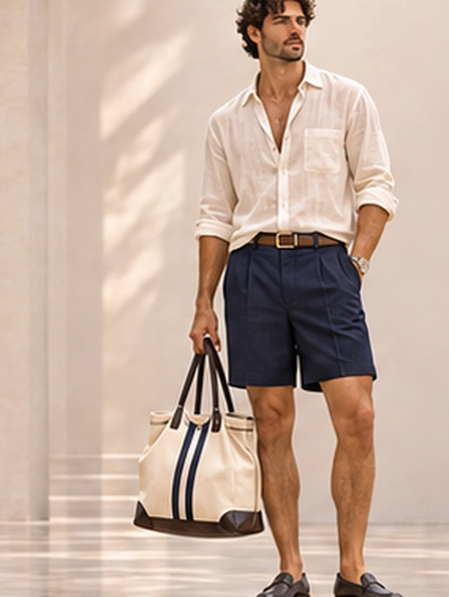
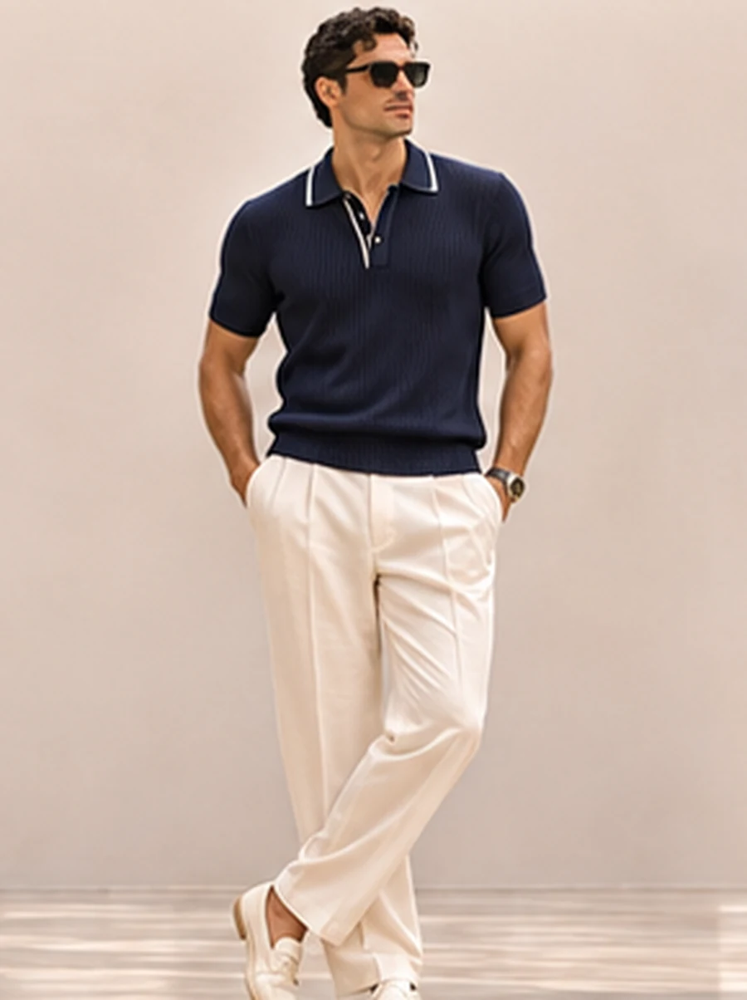
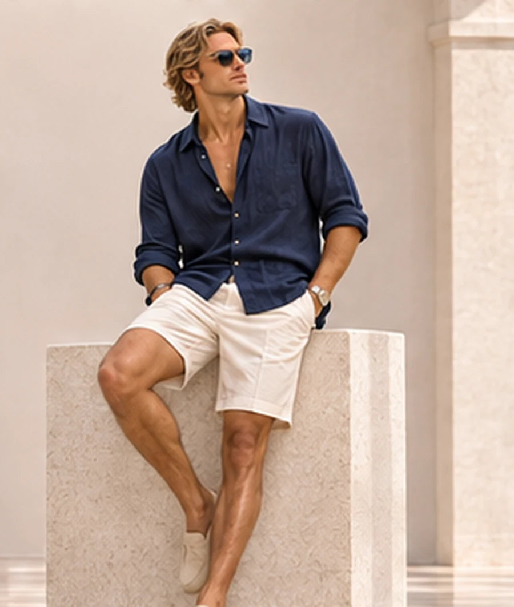
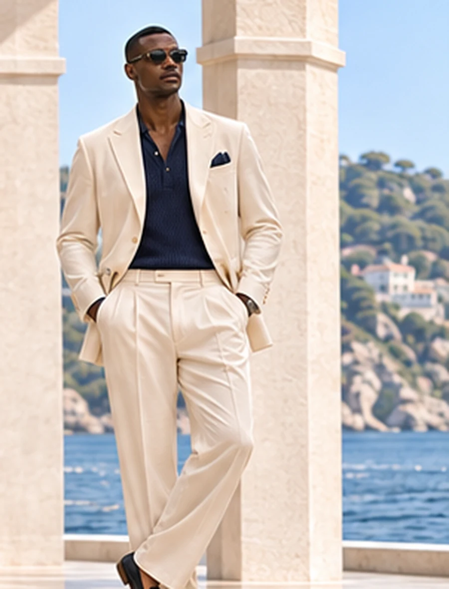
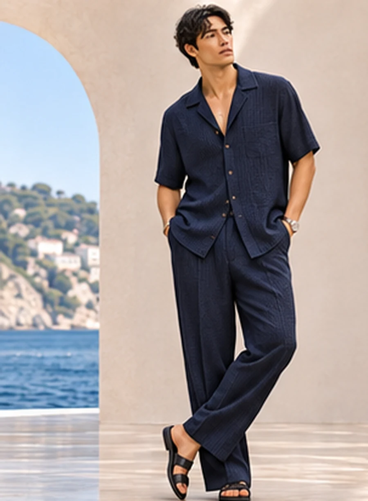
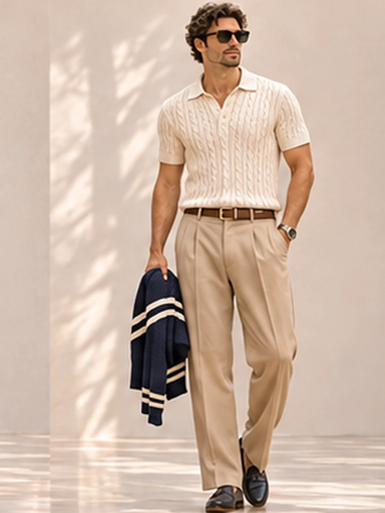
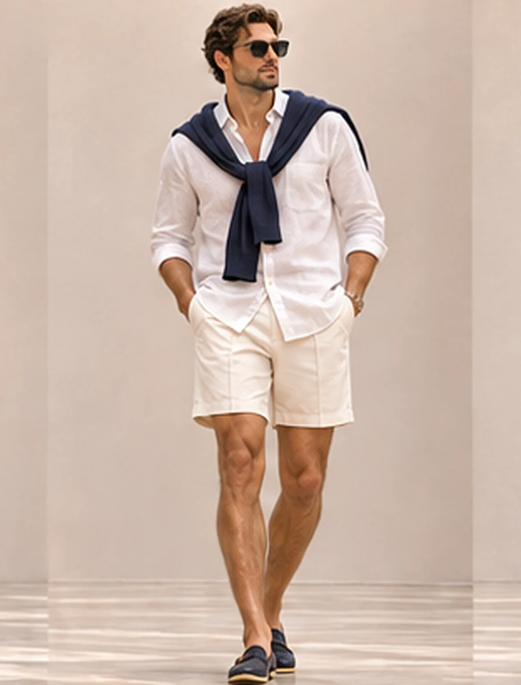
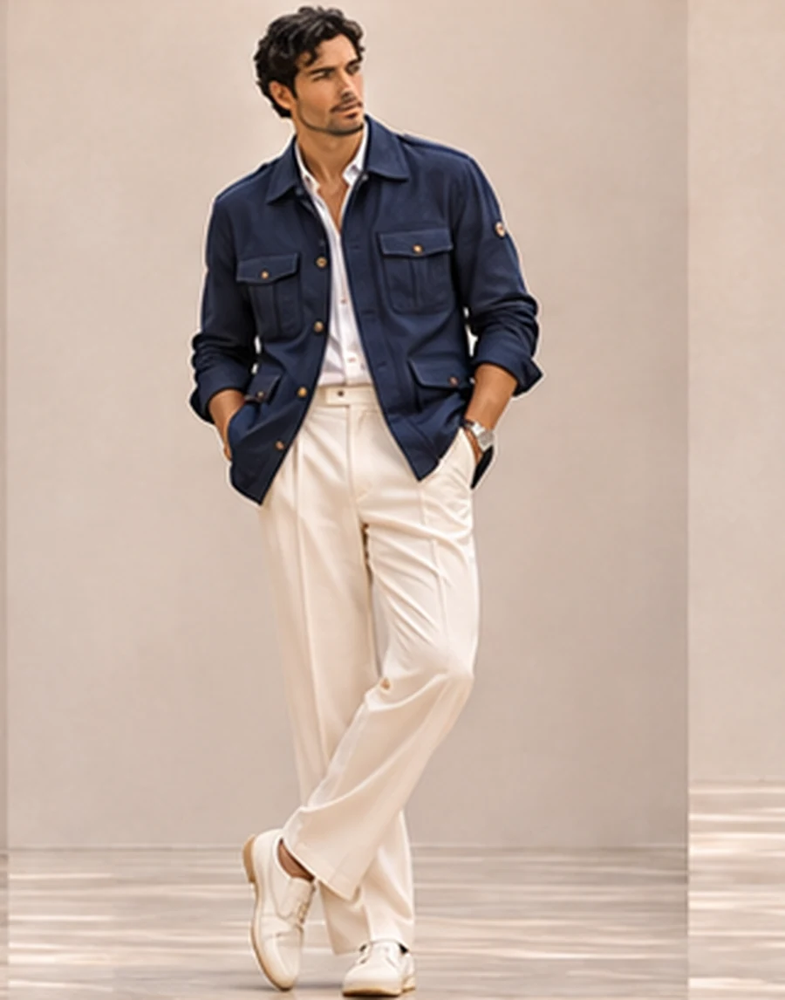
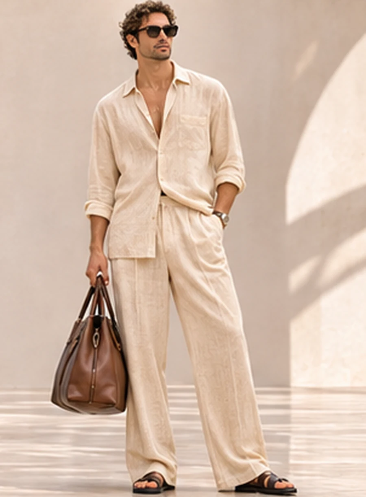

GRUT Buenos Aires · Colección
Navy
Diez looks de sastrería mediterránea: lino, punto y blazer.

Riviera
Hombre · USD 2.680
Yacht Club
Hombre · USD 1.480
Nautique
Hombre · USD 1.680
Capri
Hombre · USD 1.580
Marina
Hombre · USD 2.980
Côte d’Azur
Hombre · USD 1.880
Voyage
Hombre · USD 1.780
Portofino
Hombre · USD 1.880
Isola
Hombre · USD 2.280
Terrasse
Hombre · USD 1.780